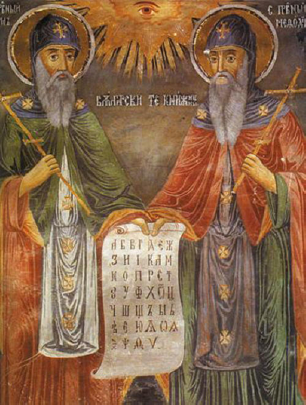

„Hoće li tko za mnom, neka se odreče samoga sebe, neka uzme svoj križ i neka ide za mnom.” (Mt 16,24)

Sveta braća Ćiril i Metod, rođeni u Solunu u 9. stoljeću, poznati su kao "slavenski apostoli" i utemeljitelji slavenske pismenosti. Ćiril, daroviti filozof i knjižničar u Carigradu, te Metod, iskusni upravitelj, poslani su iz Bizanta u Moravsku kako bi kršćanstvo propovijedali na narodu razumljivom jeziku. Za potrebe te misije Ćiril je sastavio prvo slavensko pismo, glagoljicu, te su na jezik makedonskih Slavena preveli najvažnije crkvene knjige, stvorivši tako prvi slavenski književni jezik.
Njihov rad naišao je na žestok otpor njemačkog klera, koji je branio isključivo pravo latinskog i grčkog jezika u bogoslužju. Kako bi opravdali svoju misiju, braća su otputovala u Rim gdje ih je papa Hadrijan svečano primio i odobrio slavenske liturgijske knjige. Ćiril se u Rimu razbolio, zamonašio i umro 869. godine, dok je Metod nastavio njihovo djelo kao panonsko-moravski nadbiskup, unatoč tome što je proveo dvije i pol godine u njemačkom zatočeništvu.
Nakon Metodove smrti 885. godine, slavenska je liturgija u Moravskoj zabranjena, a njihovi su učenici protjerani, no njihovo se nasljeđe proširilo među ostale slavenske narode, uključujući i Hrvate. Svojim prijevodima Biblije i crkvenih tekstova postavili su temelje kulture i identiteta mnogih naroda. Zbog neprocjenjivog doprinosa jedinstvu kršćanskog Istoka i Zapada te kulturnom razvoju starog kontinenta, danas se slave kao suzaštitnici Europe.